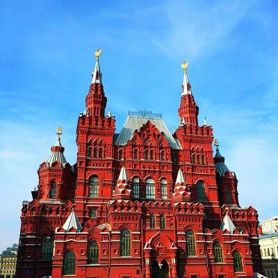
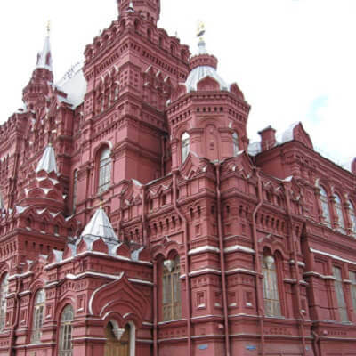
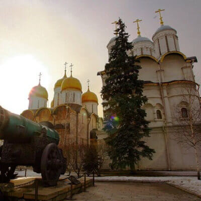
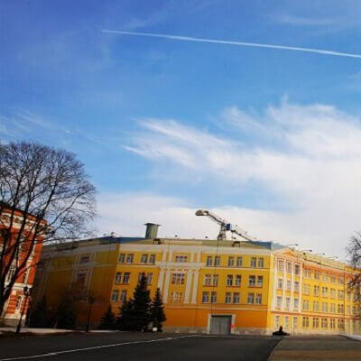
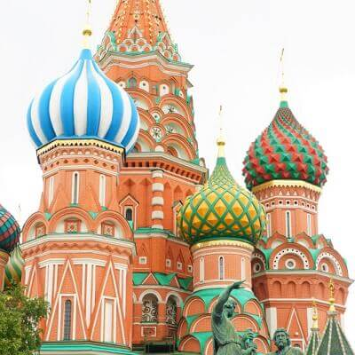
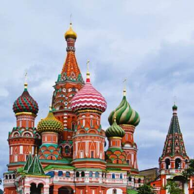
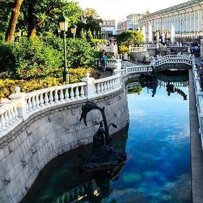
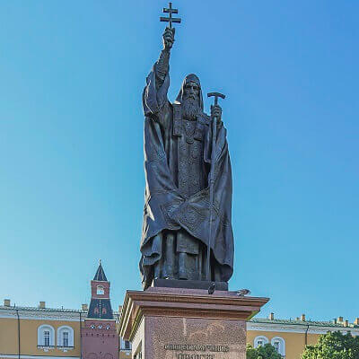

morly旅游网
莫斯科（Moscow），是俄罗斯联邦首都、莫斯科州首府。莫斯科是俄罗斯的政治、经济、文化、金融、交通中心以及最大的综合性城市，是一座国际化大都市。
莫斯科地处俄罗斯欧洲部分中部、东欧平原中部，跨莫斯科河及支流亚乌扎河两岸。莫斯科和伏尔加流域的上游入口和江河口处相通，是俄罗斯乃至欧亚大陆上极其重要的交通枢纽，也是俄罗斯重要的工业制造业中心、科技、教育中心。
红场（ красная площадь）
红场（俄文 красная площадь 英文 Red Square）位于俄罗斯首都莫斯科市中心，临莫斯科河，是莫斯科最古老的广场 ，是重大历史事件的见证场所。更是俄罗斯重要节日举行群众集会、大型庆典和阅兵活动之处，是世界著名旅游景点。
 克里姆林宫
克里姆林宫是一组建筑群，位于莫斯科心脏地带，是俄罗斯联邦的象征、总统府所在地。 克里姆林宫的“克里姆林”在俄语中意为“内城”。蒙古语中，是“堡垒”之含义。位于俄罗斯首都最中心的博罗维茨基山岗上，南临莫斯科河，西北接亚历山大罗夫斯基花园，东南与红场相连，呈三角形。保持至今的围墙长2235米，厚6米，高14米，围墙上有塔楼18座，参差错落地分布在三角形宫墙上，其中最壮观、最著名的要属带有鸣钟的救世主塔楼。5座最大的城门塔楼和箭楼装上了红宝石五角星，这就是人们所说的克里姆林宫红星。克里姆林宫享有“世界第八奇景”的美誉。 莫斯科克里姆林宫是俄罗斯国家的象征，是世界上最大的建筑群之一，是历史瑰宝、文化和艺术古迹的宝库。
 圣瓦西里大教堂
圣瓦西里大教堂（华西里·伯拉仁内教堂）位于俄罗斯首都莫斯科市中心的红场南端，紧傍克里姆林宫。由俄罗斯建筑师巴尔马和波斯特尼克根据沙皇和伊凡大公的命令主持修建，于1560年建成。教堂的名字是根据当时伊凡大帝非常信赖的一位修道士瓦西里的名字而取的。中央的塔高65米，共有九个金色洋葱头状的教堂顶。这九个教堂顶并不是一开始就有的，而是后来分别加上去的。
 亚历山大公园
亚历山大公园位于克里姆林宫西部长墙，在莫斯科马场前方。这座公园是在拿破仑战争之后，由Osip Bove在修复被毁坏的城市之时设计建造的。这个公园由三个不同园林组成，沿着克里姆林宫西墙的总长度是865米。
 内容整理至网络，如有侵权，请联系我们！1255394075@qq.com